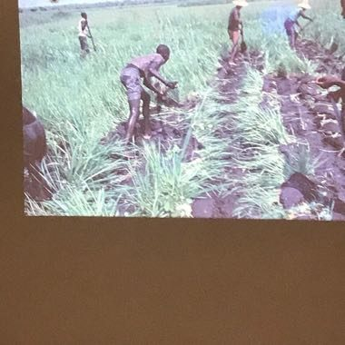

Home / Crossroads and Golden Ages / Africa: Sahel, West and Central
Encyclopedia ID 1235
Balanta Mangrove Rice Polder
Balanta bolanha rice


Build earth dikes and sluice gates around a tidal mangrove field so fresh rainwater is trapped and salt tide stays out, then plant and harvest rice.
Heritage note
Part of the living heritage of Guinea-Bissau. Some forms of this practice carry deep meaning for the communities who keep it; here we describe the play and the craft only, with respect for its roots.
Origins
Usually placed in the era of Crossroads and Golden Ages (about 500 to 1500), although its exact origins are uncertain, within the cultural world of Africa: Sahel, West and Central.
Sources
Related entries

Yote Capture Grid
Senegal +2 · Board and table games
Sahel Salt Caravan
Niger +1 · Sports with animal partners
Queah
Liberia · Board and table games
Acadja Fish Park
Benin · Board and table games
Vai Syllabary Decoder
Liberia · Puzzles and mind games
Nzango
Congo · Board and table games